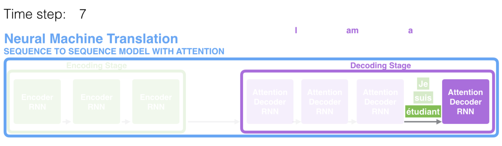
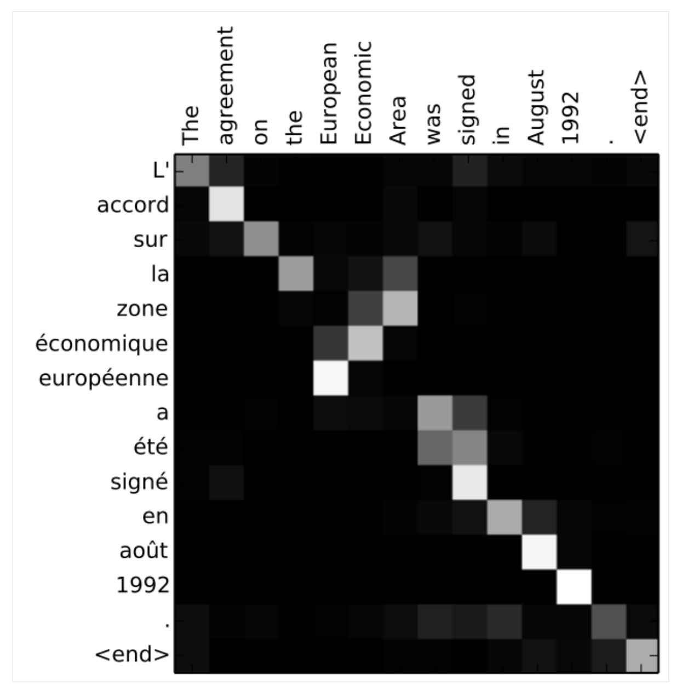
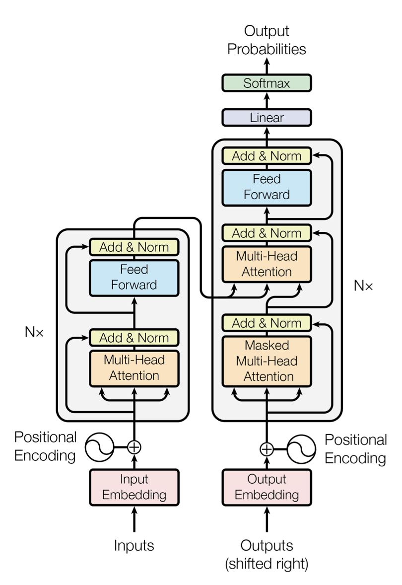
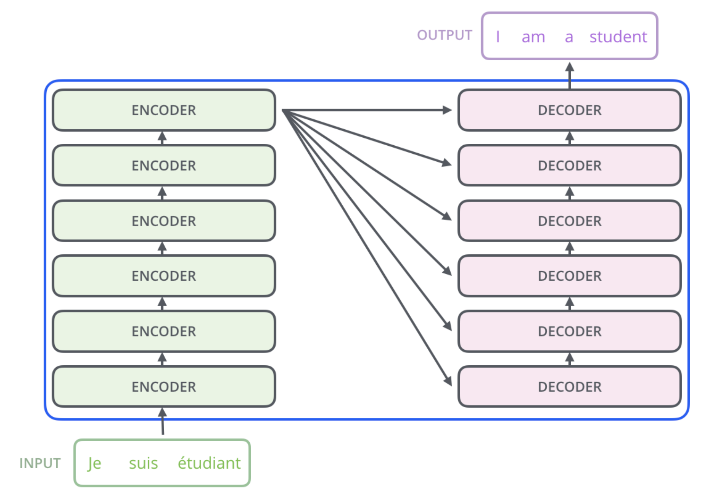
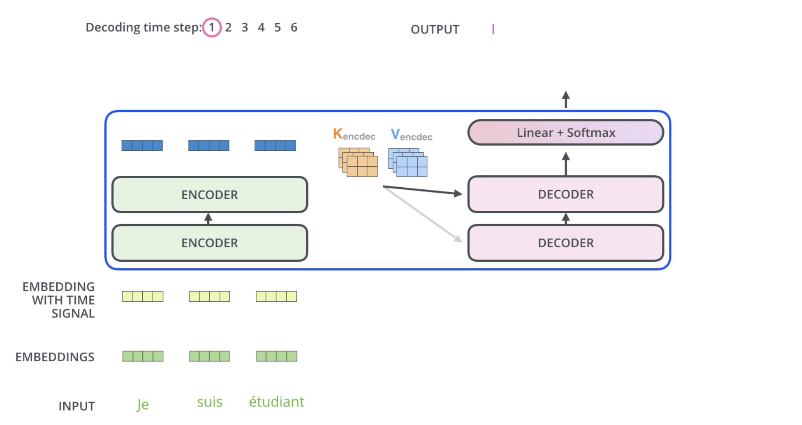

Transformers 1
Lviv University
Attention
Early methods
- MLP
- Convolutions
- Recurrent NNs
Note
- convolutions dominating image processing
- LSTM RNNs dominating NLP
Applications
Applications of transformers
- NLP
- image recognition
- speech recognition
- reinforcement learning
Attention
History
Attention - originally proposed for encoded-decoder architectures.
Vaswani paper - “Attention is all you need”
Large-scale pretrained models, now sometimes called foundation models.
seq2seq models
seq2seq
Definition
A sequence-to-sequence model is a model that takes a sequence of items (words, letters, features of an images…etc) and outputs another sequence of items.

seq2seq
Encoder/Decoder
Under the hood, the model is composed of an encoder and a decoder.
The encoder processes each item in the input sequence, it compiles the information it captures into a vector (called the ). After processing the entire input sequence, the encoder sends the context over to the decoder, which begins producing the output sequence item by item.
The context is a vector (an array of numbers, basically) in the case of machine translation. The encoder and decoder tend to both be recurrent neural networks
seq2seq
RNN takes two inputs: an input (one word from the input sentence) and a hidden state.
Context: You can set the size of the context vector when you set up your model. It is basically the number of hidden units in the encoder RNN. These visualizations show a vector of size 4, but in real world applications the context vector would be of a size like 256, 512, or 1024.
seq2seq
seq2seq
seq2seq
In the following visualization, each pulse for the encoder or decoder is that RNN processing its inputs and generating an output for that time step. Since the encoder and decoder are both RNNs, each time step one of the RNNs does some processing, it updates its hidden state based on its inputs and previous inputs it has seen.
Let’s look at the hidden states for the encoder. Notice how the last hidden state is actually the context we pass along to the decoder.
seq2seq
seq2seq
Unrolled view
seq2seq
Problem
The context vector turned out to be a bottleneck for these types of models: it was challenging for the models to deal with long sentences.
Solution
A solution was proposed in Bahdanau et al., 2014 and Luong et al., 2015.
- These papers introduced and refined a technique called attention, which highly improved the quality of machine translation systems.
- Attention allows the model to focus on the relevant parts of the input sequence as needed.
seq2seq
At time step 7, the attention mechanism enables the decoder to focus on the word “étudiant” (“student” in french) before it generates the English translation.
seq2seq
Attention model differences
Encoder passes all hidden states to the decoder, not just the last state.
Decoder does some extra step before producing its output:
- Look at the set of encoder hidden states it received – each encoder hidden state is most associated with a certain word in the input sentence
- Give each hidden state a score
- Multiply each hidden state by its softmaxed score, thus amplifying hidden states with high scores, and drowning out hidden states with low scores
- The scoring is done at each time step.
seq2seq
Illustrated
seq2seq
seq2seq
Process
- The attention decoder RNN takes in the embedding of the
token, and an initial decoder hidden state. - The RNN processes its inputs, producing an output and a new hidden state vector \(h_4\). The output is discarded.
- Attention Step: We use the encoder hidden states and the \(h_4\) vector to calculate a context vector \(c_4\) for this time step.
- We concatenate \(h_4\) and \(c_4\) into one vector.
- We pass this vector through a feedforward neural network (one trained jointly with the model).
- The output of the feedforward neural networks indicates the output word of this time step.
- Repeat for the next time steps
seq2seq
seq2seq
Another way
seq2seq
Model learns how to align words (example from paper).
Transformers
Transformers
Attention is all you need (2017)
Transformers
Compared to seq2seq, performance is improved!
Transformers
Encoder and decoder structure.
Transformers
A key property of the Transformer: the word in each position flows through its own path in the encoder. There are dependencies between these paths in the self-attention layer. The feed-forward layer does not have those dependencies, however, and thus the various paths can be executed in parallel while flowing through the feed-forward layer.
Transformers
The word at each position passes through a self-attention process. Then, they each pass through a FFNN.
Transformers
High-level view
What does the word “it” refer to?
The animal didn’t cross the street because it was too tired
Transformers
High-level flow
when the model is processing the word “it”, self-attention allows it to associate “it” with “animal”.
as the model processes each word (each position in the input sequence), self attention allows it to look at other positions in the input sequence for clues that can help lead to a better encoding for this word.
for RNNs, maintaining a hidden state allows them to incorporate its representation of previous words/vectors it has processed with the current one it’s processing.
Self-attention is the method the Transformer uses to bake the “understanding” of other relevant words into the one we’re currently processing.
Transformers
How is self-attention calculated?
- Create 3 vectors (Query, Key, Value) from each input embedding.
Transformers
How is self-attention calculated?
- Calculate score. The score is calculated by taking the dot product of the query vector with the key vector of the respective word we’re scoring.
Transformers
How is self-attention calculated?
Divide by \(\sqrt{d_k}\).
Normalize via softmax.
Transformers
How is self-attention calculated?
Multiply each value vector by softmax score.
Intuition: keep intact the values of the word(s) we want to focus on, and drown-out irrelevant words (by multiplying them by tiny numbers like 0.001, for example).
Sum up weighted value vectors. This produces the output of the self-attention layer at this position (for the first word).
Transformers
Transformers
Matrix calculation
Transformers
Matrix calculation
Transformers
Multiheaded attention
Introduced in the original paper.
This improves the performance of the attention layer in two ways:
- It expands the model’s ability to focus on different positions.
- It gives the attention layer multiple “representation subspaces”.
Transformers
Transformers
Calculating e.g. 8 times:
Transformers
Problem
Feed-forward layer is not expecting 8 matrices, but 1.
Solution
Concat the matrices then multiply them by an additional weights matrix \(W_O\).
Transformers
Transformers
Everything together.
Transformers
The model’s representation of the word “it” bakes in some of the representation of both “animal” and “tired”.
Transformers
With all attention heads.
Transformers
Problem
How do we account for the order of the words in the input sequence?
Solution
The transformer adds a vector to each input embedding.
These vectors follow a specific pattern that the model learns, which helps it determine the position of each word, or the distance between different words in the sequence.
The intuition here is that adding these values to the embeddings provides meaningful distances between the embedding vectors once they’re projected into Q/K/V vectors and during dot-product attention.
Transformers
Values of positional encoding vectors follow a specific pattern.
Transformers
A real example of positional encoding with a toy embedding size of 4.
Transformers
Transformers
A formule for PE from the paper
\[ PE_{(pos,2i)} =sin(pos/10000^{2i/d_{model}}),\\ PE_{(pos,2i+1)} =cos(pos/10000^{2i/d_{model}}) \] where \(pos\) is the position and \(i\) is the dimension.
That is, each dimension of the positional encoding corresponds to a sinusoid. The wavelengths form a geometric progression from \(2\pi\) to \(10000 \cdot 2\pi\). We chose this function because we hypothesized it would allow the model to easily learn to attend by relative positions, since for any fixed offset \(k\), \(PE_{pos+k}\) can be represented as a linear function of \(PE_{pos}\).
Transformers
Each sub-layer (self-attention, ffnn) in each encoder has a residual connection around it, and is followed by a layer-normalization step.
Transformers
With vectors and operations visualized.
Transformers
Transformer of 2 stacked encoders and decoders
Transformers
Decoder
- The encoders start by processing the input sequence
- The output of the top encoder is then transformed into a set of attention vectors \(\boldsymbol{K}\) and \(\boldsymbol{V}\)
- These are to be used by each decoder in its “encoder-decoder attention” layer which helps the decoder focus on appropriate places in the input sequence.
- Each step in the decoding phase outputs an element from the output sequence (the English translation sentence in this case).
Transformers
Transformers
Transformers
Decoder
The self attention layers in the decoder operate in a slightly different way than the one in the encoder:
In the decoder, the self-attention layer is only allowed to attend to earlier positions in the output sequence. This is done by masking future positions (setting them to -inf) before the softmax step in the self-attention calculation.
Note
The “Encoder-Decoder Attention” layer works just like multiheaded self-attention, except it creates its Queries matrix from the layer below it, and takes the Keys and Values matrix from the output of the encoder stack.
Transformers
Decoder
The decoder stack outputs a vector of floats. How do we turn that into a word? That’s the job of the final Linear layer which is followed by a Softmax Layer.
The Linear layer is a simple fully connected neural network that projects the vector produced by the stack of decoders, into a much, much larger vector called a logits vector.
Let’s assume that our model knows 10,000 unique English words (our model’s “output vocabulary”) that it’s learned from its training dataset. This would make the logits vector 10,000 cells wide – each cell corresponding to the score of a unique word. That is how we interpret the output of the model followed by the Linear layer.
The softmax layer then turns those scores into probabilities (all positive, all add up to 1.0). The cell with the highest probability is chosen, and the word associated with it is produced as the output for this time step.
Transformers
This figure starts from the bottom with the vector produced as the output of the decoder stack. It is then turned into an output word.
Transformers
Training a model
During training, an untrained model would go through the exact same forward pass. But since we are training it on a labeled training dataset, we can compare its output with the actual correct output.
Transformers
Once we define our output vocabulary, we can use a vector of the same width to indicate each word in our vocabulary. This also known as one-hot encoding. So for example, we can indicate the word “am” using the following vector.
Transformers
The loss function
We want the output to be a probability distribution indicating the word “thanks”.
Transformers
Comparison
How do you compare two probability distributions? Kullback–Leibler divergence.
We want our model to successively output probability distributions where:
- Each probability distribution is represented by a vector of width vocab_size (6 in our toy example, but more realistically a number like 30,000 or 50,000)
- The first probability distribution has the highest probability at the cell associated with the word “i”
- The second probability distribution has the highest probability at the cell associated with the word “am”
- And so on, until the fifth output distribution indicates
, which also has a cell associated with it from the 10,000 element vocabulary.
Transformers
The targeted probability distributions.
Transformers
Produced probability distributions.
Attention
Database analogy
Denote by \[ D \equiv \left\{(k_1, v_1, \dots, (k_m, v_m)\right\} \] a database of \(m\) tuples of keys and values. Denote by \(\boldsymbol{q}\) a query.
Attention definition
\[ Attention(\boldsymbol{q}, D) \equiv \sum\limits_{i=1}^m \alpha(\boldsymbol{q}, k_i)v_i, \] where \(\alpha(\boldsymbol{q},k_i) \in \mathbb{R}\) are scalar attention weights.
The operation itself is typically referred to as attention pooling. The name attention derives from the fact that the operation pays particular attention to the terms for which the weight \(\alpha\) is significant (i.e., large).
Attention
Special cases
- \(\alpha(\boldsymbol{q}, k_i) \geq 0\) – output of the attention mechanism is contained in the convex cone spanned by the values \(\boldsymbol{v}_i\)
- \(\sum_i \alpha(\boldsymbol{q}, k_i) = 1, \alpha(q,k_i) \geq 0 \; \forall i\) – most common
- \(\exists j: \alpha(\boldsymbol{q}, k_j) = 1, \; \alpha(\boldsymbol{q}, k_i) = 0, i \neq j\) – traditional database query
- \(\alpha(\boldsymbol{q}, k_i) = \frac{1}{m} \; \forall i\) – average pooling
Attention
Strategies:
Normalization
\[ \alpha(\boldsymbol{q}, k_i) = \frac{\alpha(\boldsymbol{q}, k_i)}{\sum_j \alpha(\boldsymbol{q}, k_j)}. \]
Exponentiation
\[ \alpha(\boldsymbol{q}, k_i) = \frac{exp\left(\alpha(\boldsymbol{q}, k_i)\right)}{\sum_j exp\left(\alpha(\boldsymbol{q}, k_j)\right)}. \]